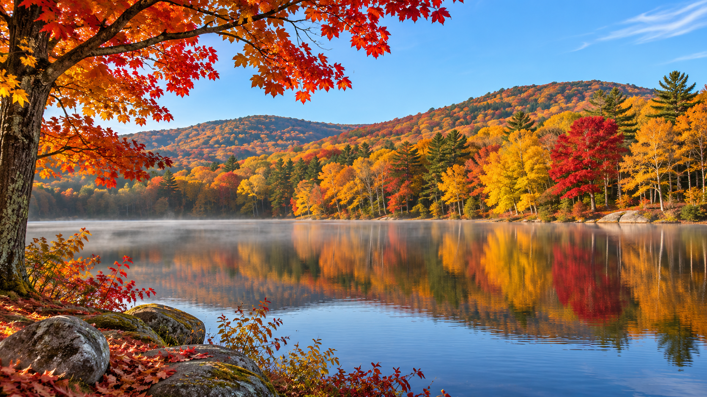
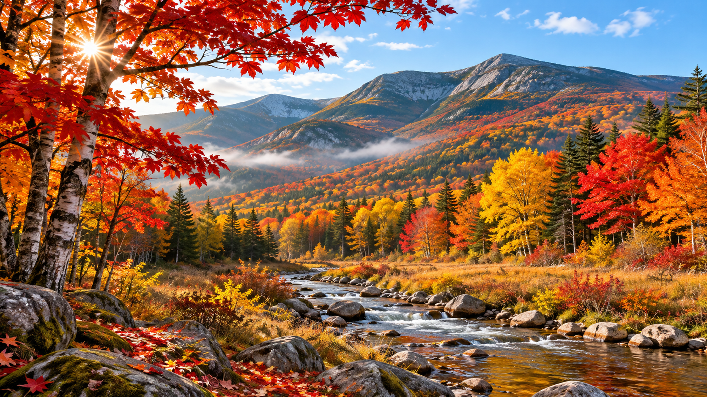
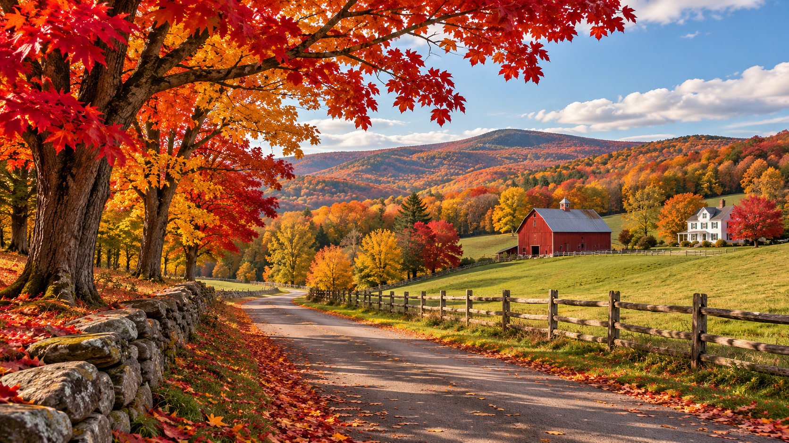

New England Fall Foliage
Fall is the best time of the year to visit New England.
Places to See Fall Colors
The best places to see depends what week in the fall you visit.
- New Hampshire
- Vermont
- Massachusetts
Explore Acadia National Park for another New England destination.



Images are AI-generated illustrations inspired by New England fall scenery.